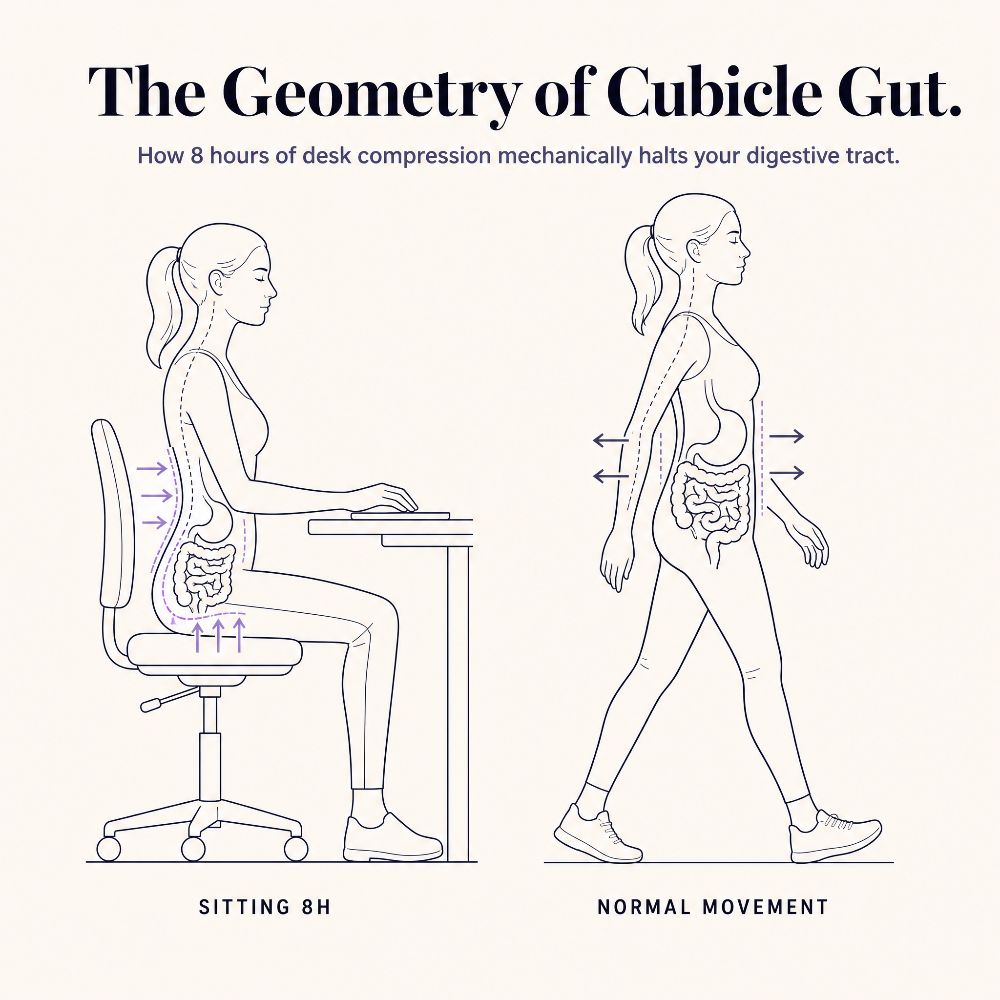
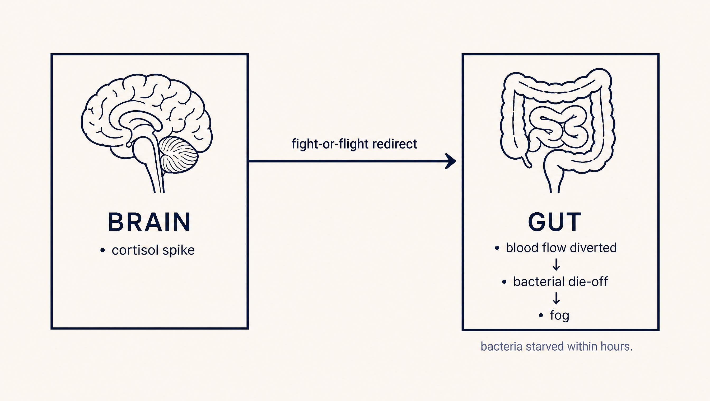
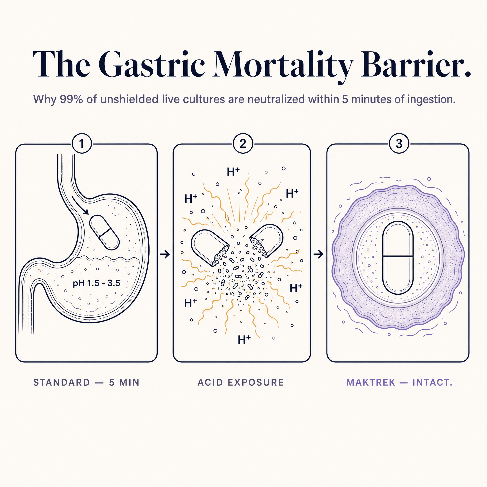
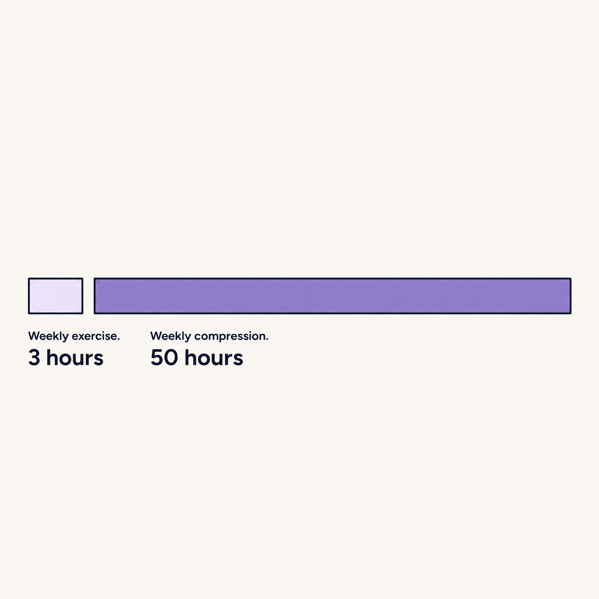
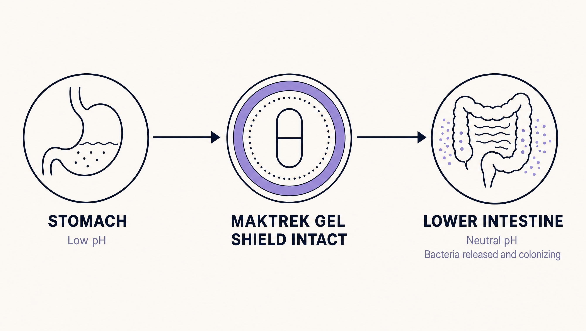

You know the moment.
You're in a meeting room, the kind with the long table and the glass walls, and your stomach makes a sound that everyone hears. You drink water. You shift in your seat. You count the minutes until you can leave.
You've been told this is stress. You've been told it's your diet. You've been told to try a probiotic, and you've tried four of them, and you're still sitting in that meeting room.
The truth is that nothing you've been told about your gut accounts for the specific environment you spend 50 hours a week inside. What follows are the 7 things a corporate desk does to a female digestive system that no wellness brand on your Instagram feed has a financial reason to tell you.
Your bloat is mechanical, not behavioral.
Sitting for 8 to 12 hours a day physically compresses the abdominal cavity. The colon, which is designed to move waste through peristaltic waves driven partly by walking, slows to a near-halt. By 2 PM your lower intestine is moving at roughly 40% of its morning rate.
This isn't a discipline problem. It's a mechanics problem.

You could eat perfectly and you would still bloat by mid-afternoon, because the geometry of your workday doesn't allow your digestive system to do what it was built to do. The same body, on a Saturday, doesn't behave this way. The variable isn't you. The variable is the chair.
Most women in your position spend years blaming their diet, their hormones, their stress management, their lack of discipline. None of these are the primary cause. The primary cause is mechanical compression of a system that requires movement to function. You can't out-discipline geometry.
(vs. morning baseline)
in a standard desk role
operates under compression
Cortisol is starving your gut bacteria.
Chronic cortisol — the kind generated by back-to-back meetings, Slack notifications, and the low-grade vigilance of an open-plan office — suppresses the growth of beneficial gut bacteria within hours.
Research on high-stress occupational environments has consistently shown measurable bacterial die-off in the gut microbiome under sustained cortisol load. The afternoon brain fog you've been blaming on lunch is a starved gut-brain axis. Your bacteria are running out of food while your boss is asking for the deck.

The mechanism is straightforward. Cortisol shifts blood flow away from the digestive tract and toward the muscles and brain — a residual evolutionary response built for running from threats, not for surviving Q4. Less blood flow to the gut means less nutrient delivery to your bacteria. Less nutrient delivery means population decline. Population decline means the bacteria that produce serotonin precursors, B vitamins, and short-chain fatty acids stop producing them at the rate you need.
This is why the 3 PM cognitive crash feels neurological. It is neurological. Your gut and your brain are the same conversation, and the conversation goes quiet when your cortisol stays high for ten hours straight.
The math your probiotic doesn't want you to do.
Your stomach maintains a pH between 1.5 and 3.5. That's roughly the acidity of battery fluid.
A standard vegetable capsule — the kind used by every major probiotic brand in this category — dissolves in that environment within 5 to 10 minutes.
This means by the time the bacteria inside the capsule reach your lower intestine, where they're supposed to colonize, the vast majority of them are dead. Industry survival rates for unshielded probiotic delivery systems sit between 0.003% and 2.8%, depending on the strain and the buffer used.

Run the math on a $60 bottle. You're paying $2 per day for a product that delivers, on average, less than 1% of what's printed on the label. The cost per surviving bacterium works out to roughly $4.28 × 10⁻⁸. For dead cells.
This isn't a brand problem. It's a capsule problem. Every probiotic that uses a standard vegetable capsule is selling you the same equation, and the equation says you're funding a wellness routine that does not survive your own stomach.
That's the reason your last four probiotics didn't work. Not your gut. Not your diet. Not your consistency. The delivery system failed before the bacteria ever got to where they were supposed to go.
Your three workouts a week aren't saving you.
You work out. You take the Pilates class. You hit the weights on Tuesday and Thursday. Maybe you run on Saturday.
It isn't enough, and the math is going to feel unfair.
Three hours of exercise cannot structurally reverse 50 hours of compression. The ratio is wrong by an order of magnitude.

Your morning Pilates class is excellent for your cardiovascular system and approximately useless for your colonic motility at 3 PM on a Wednesday, because by 3 PM you've been sitting for six hours since the class ended.
The problem isn't that you don't move enough overall. The problem is that you don't move during the specific 50-hour block when the damage is actually happening.
Walking 200 steps every 30 minutes during the workday would do more for your gut than a 90-minute spin class on Saturday. Most of you reading this know that. Most of you reading this also know that there is no version of your job where you get up every 30 minutes to walk. Not realistically. Not without consequences.
So the workouts aren't the fix. They were never going to be the fix. They're a useful input that has been carrying more weight in your mental model than they can structurally bear.
The crutches in your desk drawer are quietly making it worse.

Coffee strips thiamine (vitamin B1) from your system. By the time you've had your third cup, your B1 levels are measurably depleted — which is one reason the afternoon crash feels neurological rather than just tired. It is neurological. B1 is a cofactor in glucose metabolism for the brain.
The reason you need more coffee this year than last year isn't tolerance. It's depletion.
Every quick fix in your desk drawer is making the underlying mechanism worse. This is not a moral failing. These products were marketed to you specifically because the problem they create funds the problem they solve.
The way out is not another crutch. The way out is restoring the underlying biology.
What a probiotic would actually have to do to work.
If you were going to build a probiotic that actually worked for a sedentary female professional, here is what it would have to do.
To our knowledge, exactly one probiotic on the market meets all four of these requirements.
50%+ survival vs. 0.003% for powder.
Flove's marine polysaccharide shield holds bacteria intact through gastric transit, releasing them at the exact pH where colonization happens.
See the Flove Protocol →30-day guarantee · No subscription · Ships in 24h
The probiotic that meets the spec.
Flove uses a patented marine polysaccharide delivery system called MAKTREK® Bi-Pass.

The capsule doesn't dissolve in stomach acid. When it enters the stomach, gastric moisture hydrates the marine polysaccharide matrix, which expands into a secondary acid-resistant gel shield that holds the bacteria intact through gastric transit. The shield naturally breaks down only when it encounters the neutral pH of the lower intestine — releasing the cultures at the exact location where they're supposed to colonize.

The 4-strain formulation (L. acidophilus La-14, B. lactis Bl-04, L. plantarum Lp-115, L. paracasei Lpc-37) was selected specifically for low upper-GI fermentation. This is the technical reason Flove doesn't cause the gas, cramping, and acclimation symptoms that made you quit your last probiotic in week two.
The strains were also selected for their published research on the gut-brain axis, including cortisol modulation and mood regulation. The bloat work and the brain fog work are happening in the same dose.
One capsule morning. One capsule evening. No subscription trap. No multi-step routine. No 4-bottle stack on your bathroom counter.
This is what you've been looking for. It just wasn't being made until now.
You now know something most of your colleagues don't.
You know why the bloat happens. You know why the supplements didn't work. You know what a real solution has to do to qualify.
What you do with that information is up to you. But you can stop blaming yourself. It was never a discipline problem.